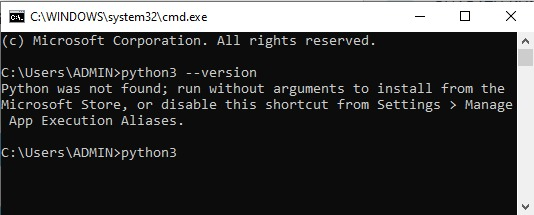
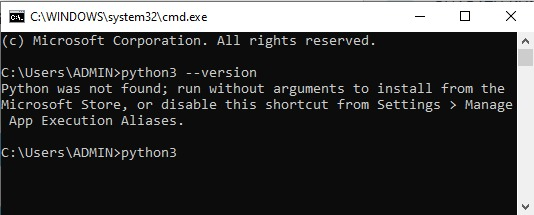

Installing Python
The latest stable release is Python 3.13.1 (December 3, 2024). To install on Windows 10:
- Open a terminal: Press Win + R, type
cmd, and press Enter. - Check if Python is installed: Type
python3 --versionand press Enter. - If not installed, type
python3to open the web installer and click "Get." - Verify installation by running
python3 --versionagain.
 
